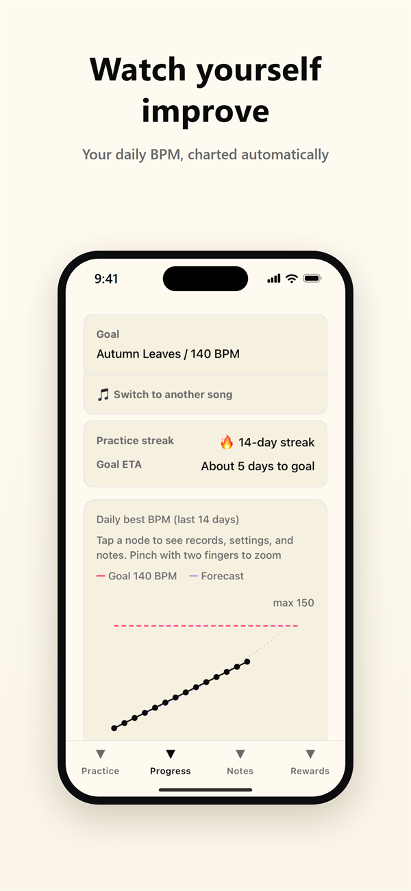
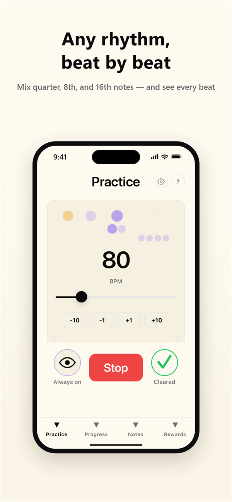
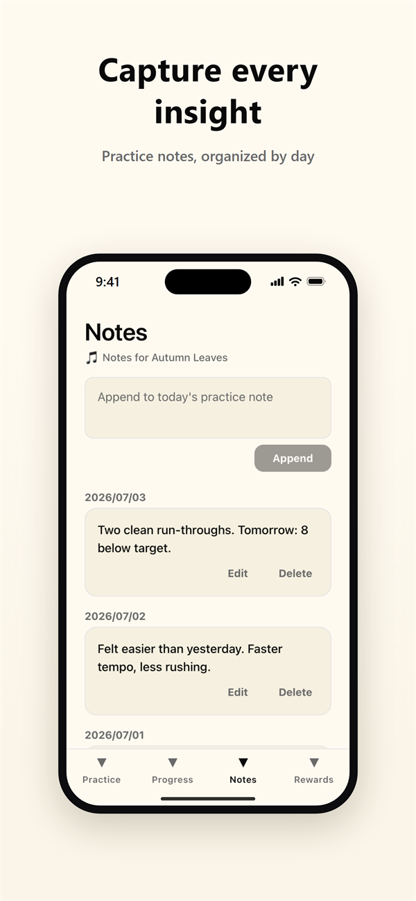
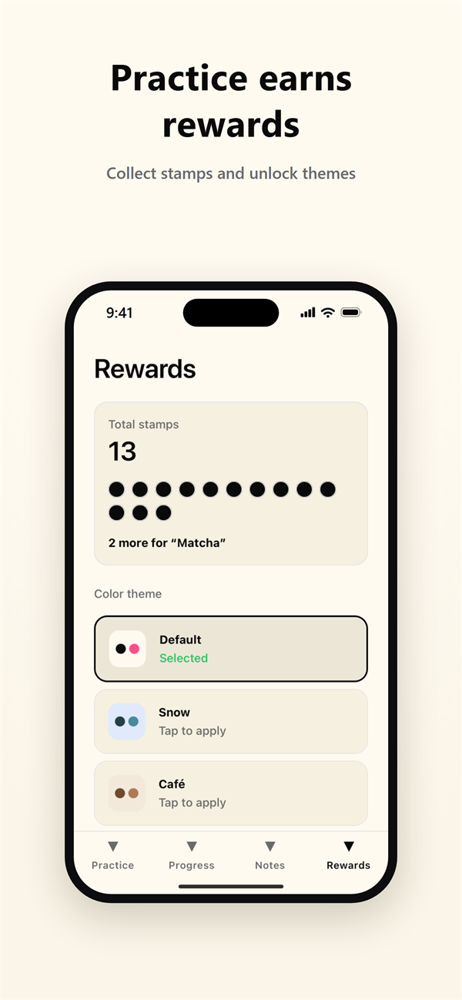

Your Metronome
Groove over mistakes.
Build rhythms beat by beat, and watch the tempo you reached each day chart itself.
A practice metronome for iPhone that does more than keep time.
Groove over mistakes.
Build rhythms beat by beat, and watch the tempo you reached each day chart itself.
A practice metronome for iPhone that does more than keep time.




All data is stored on your device. No account required.
Free
Every metronome feature is free, plus the daily BPM graph, practice notes, and up to 3 presets.
Monthly or annual
A 7-day free trial comes with the annual plan. Prices are shown in your local currency on the App Store.
Tempo Trainer / practice streak and goal-ETA forecast / unlimited presets / early access to the photo theme
Your Metronome Pro is an auto-renewable subscription. Payment is charged to your Apple ID at confirmation of purchase. It renews automatically unless auto-renew is turned off at least 24 hours before the end of the period. You can manage or cancel in your App Store account settings after purchase.